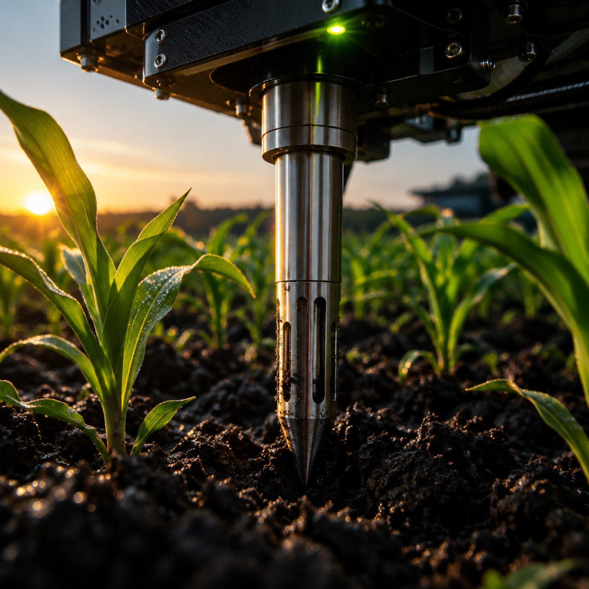

01
Uniform fertilizer application
A single blend and a single rate across the whole field, even where nutrient availability already differs cell by cell.
EduStream / WSRO — Fibonacci International Competition · Italy 2026
An autonomous agricultural rover that measures soil cell-by-cell, understands individual crop requirements and applies nutrients only when necessary.
2
Controllers
Arduino UNO R3 · ESP32
3
Crop profiles
configurable thresholds
4
Operating modes
plain → custom coordinates
IMU
Live navigation
no GPS dependency

Sense locally.
Decide intelligently.
Act only when needed.
02The agricultural problem
Conventional management treats a field as one uniform body. In practice, nutrient availability, moisture and pH can differ sharply between neighbouring cells — and different crops demand different conditions entirely.
01
A single blend and a single rate across the whole field, even where nutrient availability already differs cell by cell.
02
Water is delivered by timetable rather than by measured root-zone moisture, so wet and dry zones receive the same input.
03
Soil data typically arrives as a handful of laboratory samples per field, not as a reading at the individual plant.
04
Manual probes and lab submissions are slow, expensive and physically demanding, which limits how often fields are measured.
05
In strip and intercropped systems, neighbouring crops have different nutrient demands yet are managed as one block.
06
Nutrients applied where they are not needed can leave the root zone, adding cost without adding yield.
Uniform application
36 / 36 cells
One blend, one rate, applied to every cell regardless of what is actually growing in it.
Cell-level application
9 / 36 cells
Each cell is measured, matched to its crop profile and treated on its own result.
Illustrative field model — not measured trial data
33%
of the Earth's soils are estimated to be degraded.
Source: FAO, Status of the World's Soil Resources (2015)
~50%
average nitrogen use efficiency in global cropping systems — roughly half of applied nitrogen is not taken up by the crop.
Source: Zhang et al., Nature (2015)
These are external reference figures used to frame the problem. The prototype has not demonstrated measured yield or runoff improvements, and this site makes no such claim.
03The solution
The rover is not a sprayer on wheels. It is an integrated sensing-to-action system: one local decision made per cell, with the whole mission reported to the farmer as it happens.
Operating principle
Sense locally. Decide intelligently. Act only when needed.
Edge decisions stay on the rover
01
The rover follows a predefined serpentine grid, holding a straight line with IMU feedback until it reaches the next sampling cell.
IMU · PD correction
02
A servo-controlled arm lowers the soil sensor into the root zone, holds position for a stable reading, then retracts.
Servo · RS485 Modbus
03
The Arduino compares the reading against the thresholds of the crop assigned to that cell — not against a field-wide average.
Local edge logic
04
The onboard sprayer activates only when a required nutrient is below its minimum. Otherwise the rover moves on.
Conditional output
Decision loop — Arduino UNO R3
Telemetry lane — ESP32
01 · Field cell
Serpentine grid halt
Position repeatable before probing
02 · RS485 probe
6-in-1 soil reading
Modbus RTU · moisture · pH · N · P · K · temp
03 · Arduino UNO R3
Compare to crop profile
N · P · K against configured minimums
04 · Sprayer
Fires only on deficiency
if reading < minimum · else no action
Arduino → ESP32
serial link · mission state
Blynk cloud
datastreams · V-pins
Farmer dashboard
phone · browser
Optional NEO-M8N · logging only — not live navigation
Four pages · one system
13 · Project identity
Built for the EduStream / WSRO Fibonacci 2026 international competition. Designed around practical agricultural challenges, embedded intelligence and precision nutrient management.
Project
Fibonacci 2026 Autonomous Smart Farming Rover
Competition
EduStream / WSRO · Fibonacci International
Edition
Italy · 2026